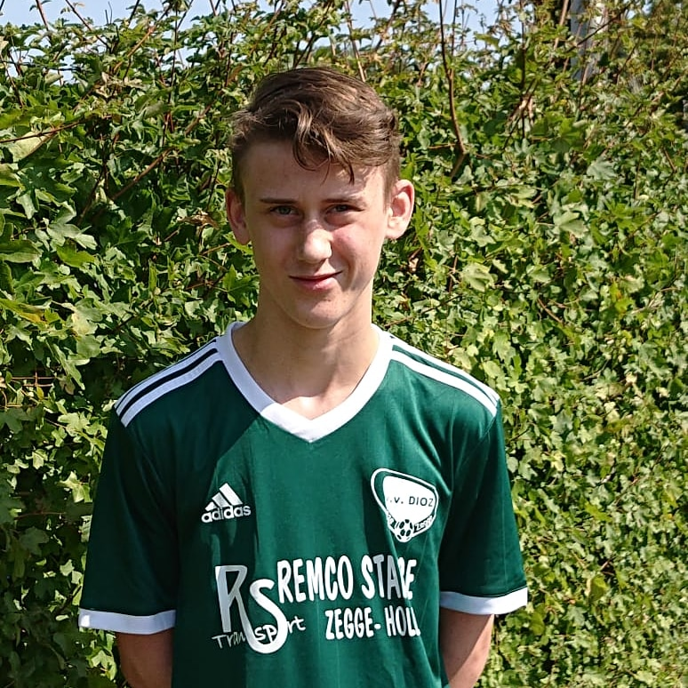
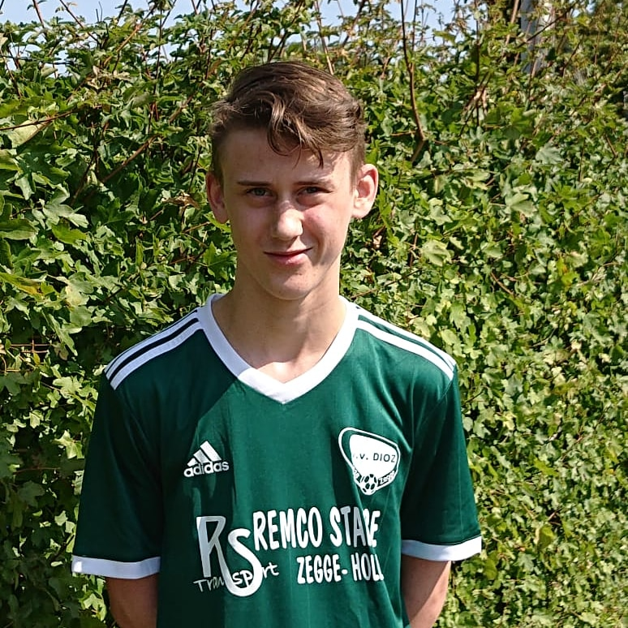
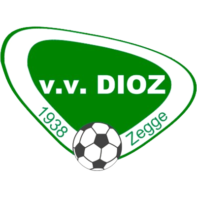

Wie ben ik?
Mijn naam is Robin Smits.
Ik ben 17 jaar oud en woon in Zegge.
Mijn vooropleiding was HAVO waar ik N&T deed op het markland college in Oudenbosch.

Mijn naam is Robin Smits.
Ik ben 17 jaar oud en woon in Zegge.
Mijn vooropleiding was HAVO waar ik N&T deed op het markland college in Oudenbosch.
Ik voetbal bij Dioz in zegge, ik voetbal bij de JO18-1 en speel ook regelmatig met de volwassen elftallen mee voornamelijk het 2e, 3e en 4e mee. Op youtube upload ik video's waarin ik aan het gamen ben en die ik zelf heb bewerkt. Ik upload de video's omdat ik plezier heb in het maken ervan en het leuk vind om het terug te kunnen zien. Ook ben ik een autosport fan, voornamelijk F1, maar het leukste is toch zelf rijden op de kartbaan of in een simulator. In mijn vrije tijd ben ik vaak aan het racen in mijn playseat, de games die ik het meeste speel zijn F1 en Gran Turismo Sport. Andere games die ik regelmatig speel zijn: Fifa, Gta & minecraft.
karakterestieken/eigenschappen
Youtube is een andere hobby van mij, ik doe dit al zo'n bijna 5 jaar. Wanneer ik aan het gamen ben en ik denk dit kan een leuke video worden dan neem ik het op. Als ik een genoeg content heb maak ik in een keer een hoop video's en upload ik deze. Deze plan ik dan meestal over een periode waarvan ik denk dat ik binnen die periode weer genoeg nieuwe content kan maken. Soms livestream ik ook wat ik heel leuk vind om te doen want er kijkt eigenlijk altijd wel iemand en regelmatig komen bekende langs omdat ze een melding krijgen en even wat willen zeggen. Om een video te bekijken klik hier.